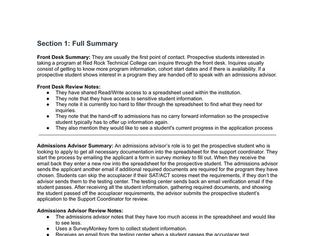
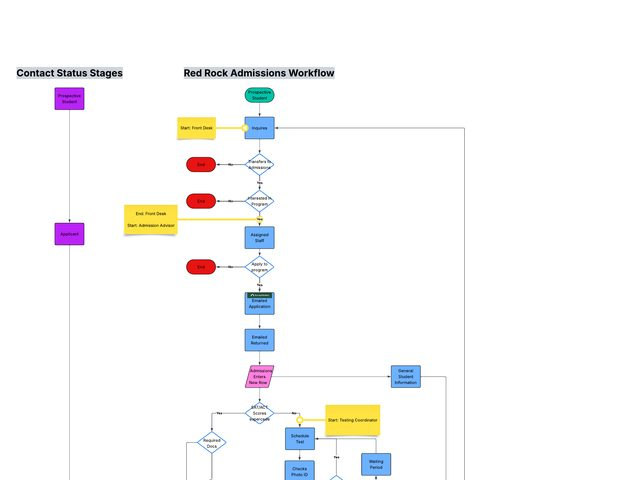
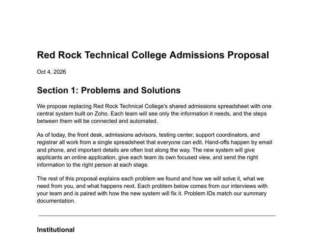
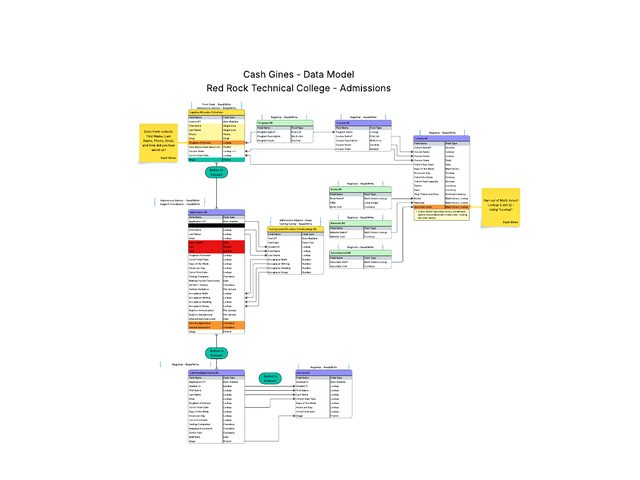
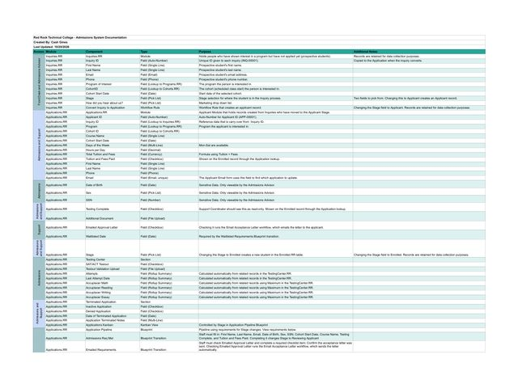

The problem
Red Rock Technical College is a fictional school whose front desk, admissions advisors, testing center, support coordinators and registrar all worked from one spreadsheet. It had more than 1,000 rows, everyone could edit it, and every filtered view one person made changed it for everyone else.
Hand-offs happened by email and phone, so details were lost between teams. Students repeated themselves after every transfer. Social Security numbers and other personal details were visible to staff who never needed them. Waitlisted students heard about open seats too late, and those seats went empty.
How I approached it
I ran discovery interviews with four of the five teams and wrote down every step, hand-off and complaint. I couldn't meet with the registrar, so I mapped that role from what the other teams described and listed my assumptions as open questions for the college to confirm. That produced 22 specific problems, each with an ID so it could be traced from the interview notes to the proposal and into the build. From there I created:
- A swimlane workflow showing every decision point, from the first inquiry to a student's final outcome
- A data model and data glossary defining each module, field and relationship
- A client proposal that pairs every problem with its fix and lists what the college needs to provide
What I found
- Everyone could edit everythingOne spreadsheet for every team, with no limits on access.
- Sensitive data was exposedSSNs, birth dates and other personal details were visible to all users.
- No owner when someone was outCoworkers had to dig through rows and call students to find out where things stood.
- Students had to repeat themselvesNothing carried over from the front desk to admissions.
- Testing results got lostScores were emailed, sometimes entered wrong and sometimes never arrived.
- Seats went emptyThe waitlist was worked by hand, so students were notified too late or not at all.
The solution
- Connected records instead of one sheet. Ten related modules for inquiries, applications, testing, programs, courses, cohorts, enrollment and costs, linked so information is entered once and flows forward.
- Access by role. Profiles give each team only what its job requires. The front desk can see a student's program and current stage but never sensitive fields.
- A clear pipeline. Every application has an owner and moves through Inquiry, Applied, Documents and Testing, Ready for Review, Accepted or Waitlisted, and Enrolled.
- Automation for routine follow-up. Blueprints guide each application through its stages so steps can't be skipped. Workflow rules and Zoho Flow check ACT/SAT scores against program requirements, send reminders for missing documents, mark stalled applications inactive and notify the support coordinator once the checklist is complete.
- Consistent communication. Email templates for document reminders, acceptance letters and seat offers, so every applicant hears the same clear message at each step.
- Online test scheduling. Students book Accuplacer sessions through Zoho Bookings, and results go straight onto their record.
- A live leadership dashboard. Applicants, acceptances, cohort fill levels and waitlists by program, so nobody builds reports by hand.
Project documents
The deliverables I produced along the way, in the order the project ran. Each opens as a PDF in a new tab.
-

Discovery summary Interview notes, the full problem log and open questions. -

Current-state workflow Swimlane diagram of how admissions works today, inquiry to outcome. -

Client proposal Every problem paired with its fix, plus next steps for the college. -

Data model The modules, fields and relationships behind the CRM. -

Data glossary Every module, field, workflow rule and access setting, documented.
What I learned
The hardest problems weren't technical. Several came down to ownership: nobody was sure who enrolled a student or who updated an outcome, so it often didn't happen. A CRM can make ownership visible with assigned records, stages and notifications, but only after the team agrees who owns each step. Asking those questions early saved me from automating a process that wasn't settled yet.
What I'd add next
A record retention schedule based on Utah requirements, automatic waitlist offers with a response deadline, and a connection to the support coordinators' attendance trackers so student progress lives on the same record.